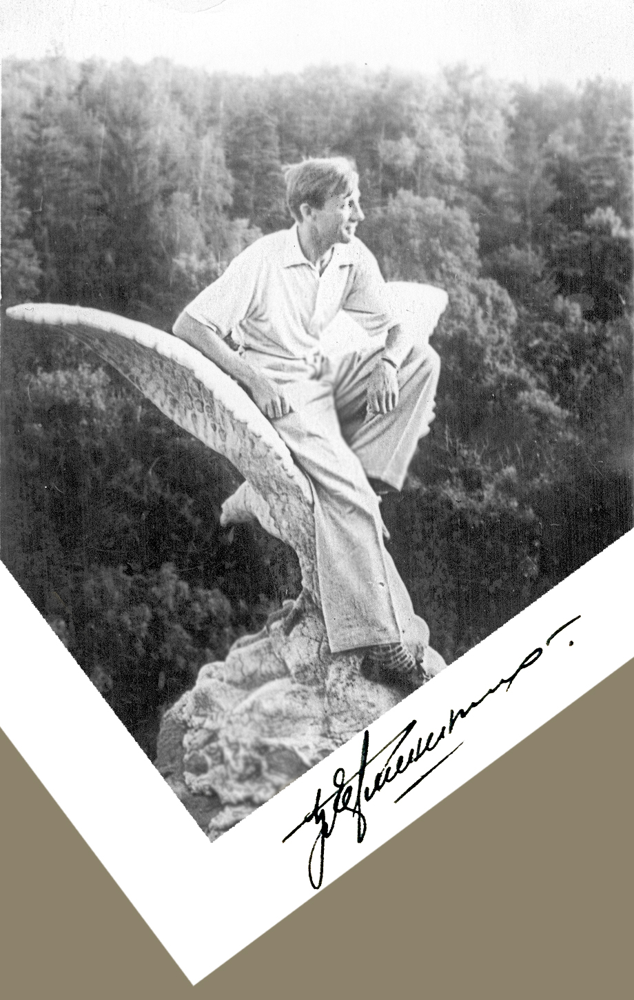

- 
-
Воспоминания современников:
"Он был очень достойным человеком и по-настоящему добрым. Никогда не повышал голос и умел доброй шуткой разрядить обстановку. Борис Сергеевич был увлеченным человеком и своим энтузиазмом заражал других, так, что тебе уже стыдно было лениться или работать спустя рукава".
Василий Калмыков, сотрудник 9 ГПЗ
-
Детство


Молодость


Семья


Последние годы